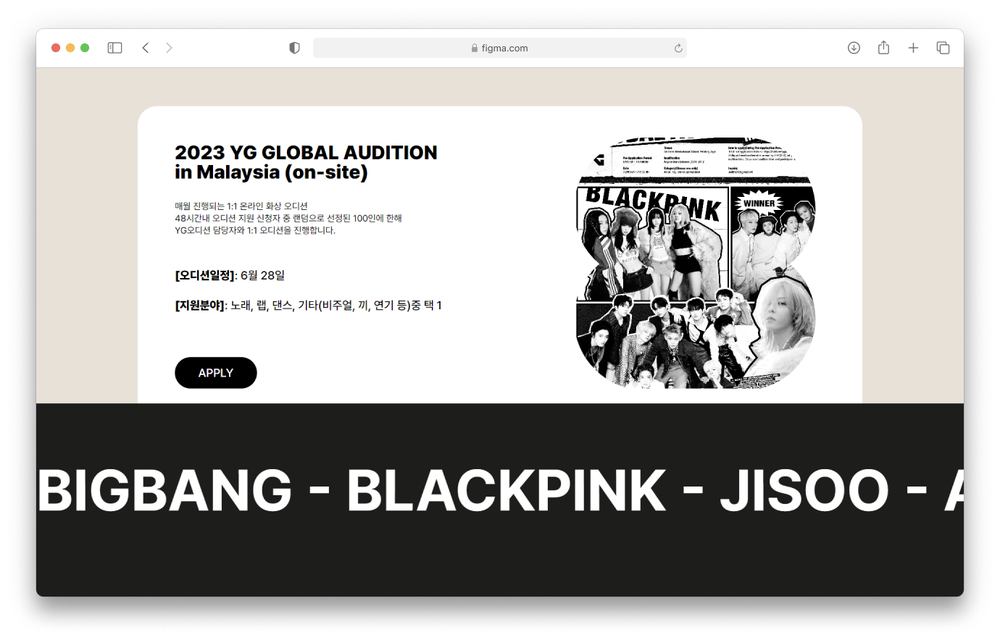

Design
-
Keyword
#명확 #강조 -
Color
1 2 3#E8E1D8
#FFFFFF
#000000
-
Typography

- Regular
- Medium
- Semi Bold
- Black
웹 퍼블리싱
과제하느라 죽을뻔했조(고은지, 김평우, 강신재, 진태식)
아티스트들과 배우들로 화려한 이미지인 YG와는 다른게 홈페이지는 매우 수수한
이미지였다, 그런 YG의 홈페이지를 보다 화려하게 만들고자 한다.
리디자인 홈페이지 선정 - 팀 Git 생성 - Style Guide 작성 - 홈페이지 리디자인 계획 -
메인, 서브 페이지 배분 - 코드 통합 후 오류 수정
서브 페이지 중, Audition 페이지와 공통적으로 들어가는 메뉴 부분 제작을 맡았다.
- 메인 페이지에서 YG에 대한 정보를 파악하기가 어렵다
-오디션 페이지에서 현재 진행중인 오디션에 대한 정보를 파악하기 힘들다.
-글이 제목 위주로 작성되어 들어가지 않으면 대략적인 내용을 알 수 가 없다.
-메인 페이지에서 회사의 대표 문구와 최신 정보들을 확인 할 수 있다.
-오디션 페이지에 들어가면 바로 현재 진행중인 오디션을 확인 할 수 있다.
-제목과 더불어 요약된 내용을 함께 적어 사용자의 흥미를 이끌게 한다.
#E8E1D8
#FFFFFF
#000000
새롭게 디자인하는 것과 더불어 기존 홈페이지에는 없던 효과를 JavaScript를 사용하여
추가할 때 서로 간 페이지와 맞추는 것과 프로젝트 가이드를 따라 구조를 짜는 과정이
처음에는 어렵게 느껴져 많이 헤맸다
팀 단위로 html, css, js뿐만 아니라 이미지와 폰트등 여러가지를 Git을 활용한 버전관리와
JavaScript와 jQuery 활용에 더욱 익숙해졌다.
서로 코드가 꼬이지않도록 공용 코드 관리와 패아자간에 연동성이 중요하다는것을 알게되었다.
또한 팀 프로젝트는 개인 프로젝트와 달리 퍼블리싱전 팀원간에 확실한 가이드가
필요하다는것을 느꼈다.
이번 프로젝트는 팀원과 의견을 맞추는것에 그치지 않고 프로젝트안에 가이드와 규칙등을 설정해
여러명이 하나의 홈페이지를 제작하는 과정을 배우게 되었다.